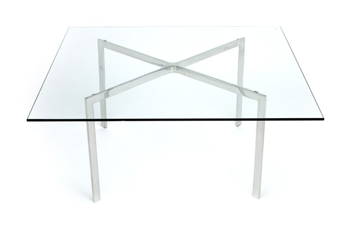
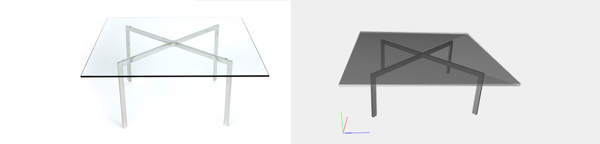

Barcelona Table
Description
The Barcelona Table (1930) was originally created for the Mies-designed Villa Tugendhat in Brno, Czech Republic, and it is often paired with the Barcelona Chair for their stylistic parallels. Absolute in its elegance, the seamless, single-piece construction of the base ensures precision and durability.
Legs
The function barcelona_table() build the legs as three CUBOIDs of depth 0.2, properly translated in order to composite the first arch. The second one is a cloned and rotated R([0, 2])([-PI/4]) version of the first one.
Complete model
The plane is a COLOR([200/255, 200/255, 200/255, 0.5])(CUBOID([6.5, 0.1, 6.5])), with a properly transparency added.
Sources: designwithinreach.com